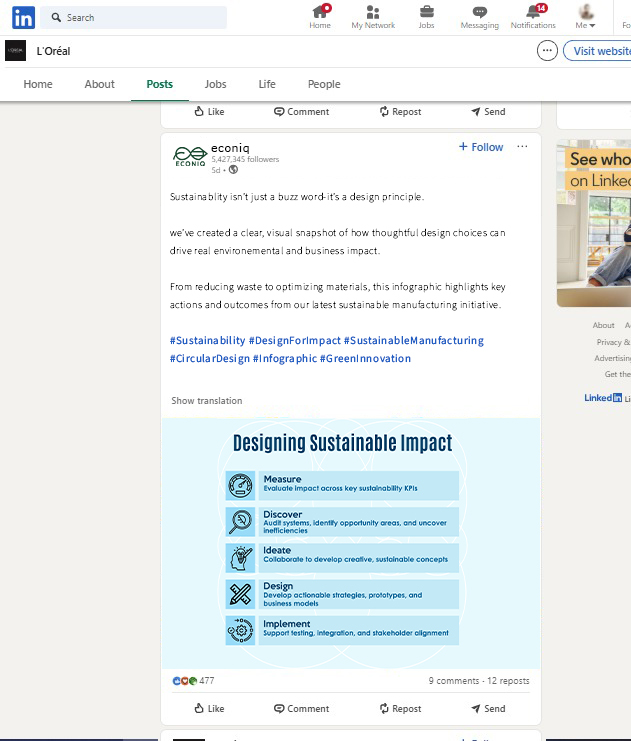

Econiq: Redefining Sustainable Commerce.

Overview
Econiq is a conceptual sustainability branding effort exploring how ecological responsibility can feel premium and considered. The project reimagines how green initiatives communicate value without relying on cliché tropes.


Landing page visual system — key states


Case study document — full spreads
Challenge
Why does sustainability branding often feel disconnected from modern commerce? The primary conflict lies in balancing ecological values — which favor restraint and raw materiality — with the high-energy, polished appeal required for market relevance.

Research & Infographics


Sustainability data visualisations — full infographic set
Approach
Before a single pixel was placed, deep strategic mapping was executed — defining the 'Conscious Luxury' audience and performing a SWOT analysis on current market leaders who rely heavily on greenwashing tropes.
Competitor Matrix
Audience Definition
The Ethical Modernist
Consumers seeking transparency without sacrificing the dopamine of a high-quality aesthetic experience.
Solution
The visual system utilises high-contrast typography and a restrained palette of Bone, Obsidian, and Chlorophyll. The logo development focused on a geometric 'E' that doubles as a cyclic infinity symbol, representing circular economics.


Newsletter design — two issues


Blog article layout — editorial RGB treatment

Social media brand application — LinkedIn mockup

Newsletter — RGB format for digital distribution
Reflection
Strategic Alignment
What worked exceptionally well in the conceptual phase was the 'Strategy-First' approach. By anchoring the visuals in economic reality rather than just ecological idealism, the brand identity felt more resilient and aligned with premium positioning.
Scaling Potential
To improve scalability today, I would explore more dynamic digital touchpoints — creating a generative visual language that shifts based on the brand's real-time carbon offset data, making the sustainability story interactive.